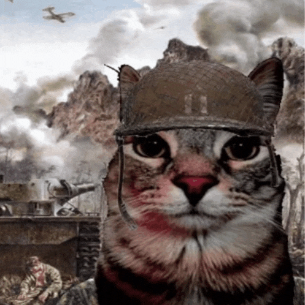
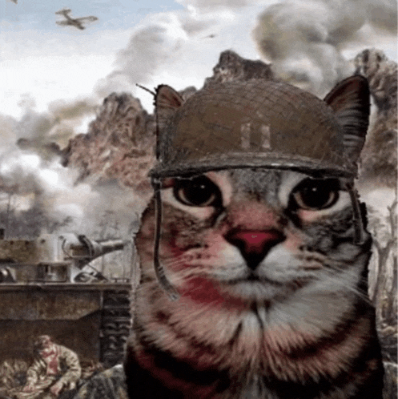
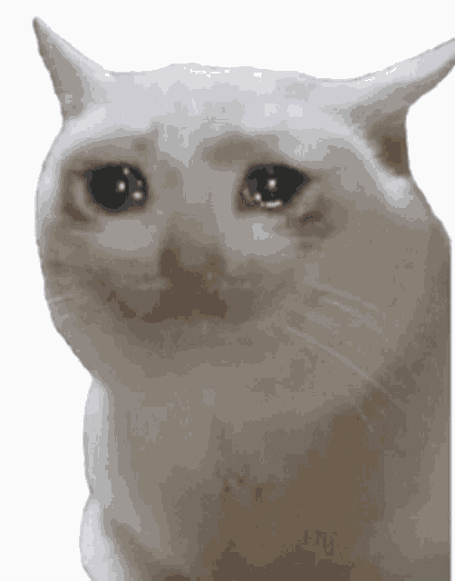
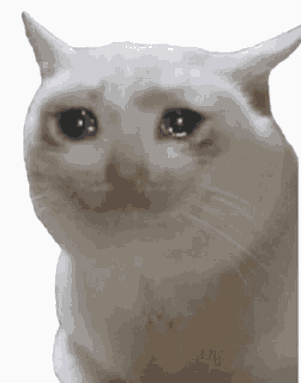

Just been through a break-up? Or just simply feeling down and sleepy? Got beaten by work and assignments? Feeling like you're about to commit atrocities? Share your feelings with these little guys. .･ﾟﾟ･(／ω＼)･ﾟﾟ･.
Find out why they are fascinated.

 

 

>> Back to main page